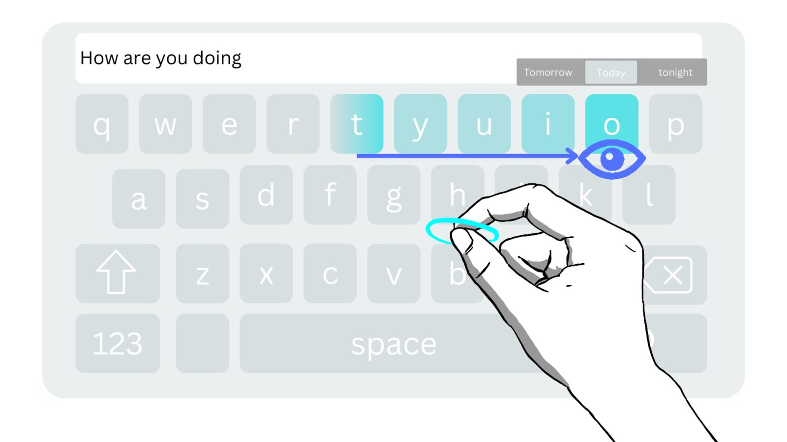

SwEYEpinch and Beyond: Exploring Intuitive, Efficient Text Entry for Extended Reality via Eye and Hand Tracking
CHI Conference on Human Factors in Computing Systems, 2026.

Abstract
Despite steady progress, text entry in Extended Reality (XR) often remains slower and more effortful than typing on a physical keyboard or touchscreen. We explore a simple idea: use gaze to swipe through a virtual keyboard for the fast, low-effort where and a manual pinch held throughout the swipe for the when, extending and validating it through a series of user studies. We first show that a basic version including a low-latency decoder with spatiotemporal Dynamic Time Warping and fixation filtering outperforms selecting individual keys sequentially, either by finger tapping each or gazing at each while pinching. We then add mid-swipe prediction and in-gesture cancellation, improving words per minute (WPM) without hurting accuracy. We show that this approach is faster and more preferred than previous gaze-swipe approaches, finger tapping with prediction, or hand swiping with the same additions. Furthermore, a seven-day, 30-session study demonstrates sustained learning, with peak performance reaching 64.7 WPM.
Cite
Z. Li, X. He, M. Wu, Z. Tong, H. Wei, B. Yang, S. Feiner, and P. Sajda, “SwEYEpinch and Beyond: Exploring Intuitive, Efficient Text Entry for Extended Reality via Eye and Hand Tracking,” in Proc. CHI Conference on Human Factors in Computing Systems, 2026, doi: 10.1145/3772318.3791820.
@inproceedings{li2026sweyepinch,
title={SwEYEpinch and Beyond: Exploring Intuitive, Efficient Text Entry for Extended Reality via Eye and Hand Tracking},
author={Li, Ziheng and He, Xichen and Wu, Mengyuan and Tong, Zeyi and Wei, Haowen and Yang, Ben and Feiner, Steven and Sajda, Paul},
booktitle={Proceedings of the 2026 CHI Conference on Human Factors in Computing Systems},
year={2026},
doi={10.1145/3772318.3791820}
}